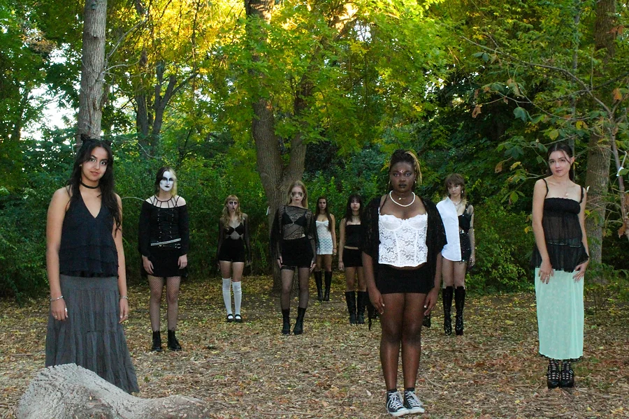
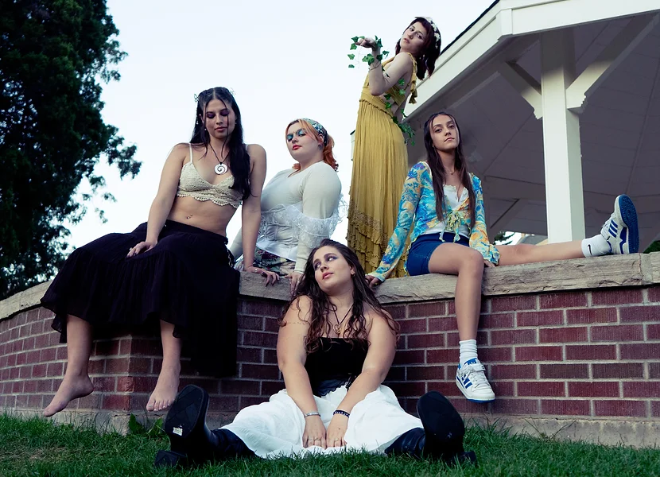

What is the Void?
The void is CSU's first lifestyle, fashion, and culture magazine aimed at bringing together creative students from Colorado State University to collaborate on our publication and give our readers a unique perspective on Fort Collins' college scene. we hope to aid students in gaining professional experience relating to their interest in launching a potential career, and build portfolios for job opportunities. from interviewing local bands to local brands, we showcase talent in the Fort Collins community that would otherwise go under the noses of students and community members. our positions allow students to express their creativity, collaborate with brands and professional artists throughout Fort Collins and Colorado, and foster relationships and connections with people of diverse backgrounds and interests.
